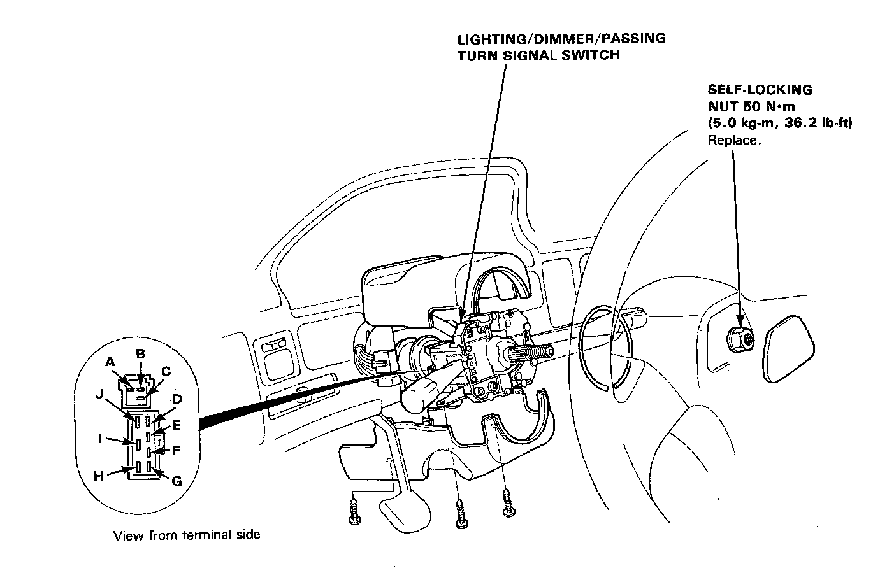
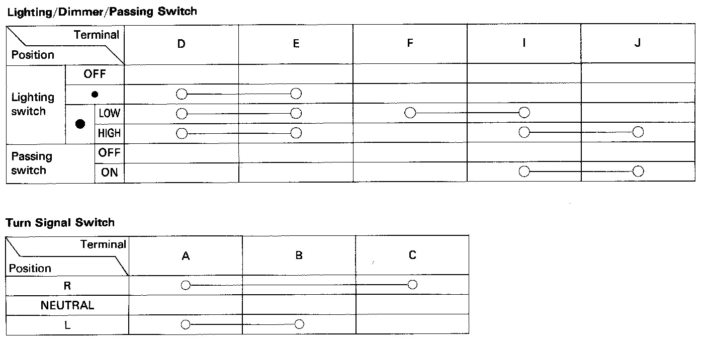

Turn Signals: Testing and Inspection
Lighting/turn Signal Switch Test
1. Remove the steering wheel and the steering column covers.

2. Disconnect the 7-P and 4-P connectors from the switch.

3. Check for continuity between the terminals in each switch position according to the tables.